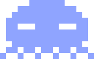

v0.1
Many arms.
One brain.
You orchestrate. Your agents execute. One terminal to coordinate work, review diffs, and manage every shell.
$ curl -fsSL https://pulpo.sh/install | sh

Pulpov0.1
You orchestrate. Your agents execute. One terminal to coordinate work, review diffs, and manage every shell.
$ curl -fsSL https://pulpo.sh/install | sh